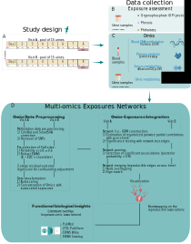

Some of these biological signatures point towards the potential biological effects of OP pesticide and phthalate metabolites on the nervous system
Childhood exposure to non-persistent endocrine disrupting chemicals and multi-omic profiles: a panel study
Lorenzo Fabbri a, b, 
Ronan Garlantézecc Karine Audouzed Mariona Bustamantee, a, b, f Ángel Carracedog, h Leda Chatzij Juan Ramón Gonzáleza, j, f Regina Gražulevičienėk Barbara Heudel Hector Keunm Chung-Ho E Laun, o Eduard Sabidóe, b Alexandros P Siskosm Rémy Slamap Cathrine Thomsenq John Wrightr Wen Lun Yuanl, s Maribel Casasa, b, f Martine Vrijheida, b, f Léa Maitrea, b, f
a Barcelona Institute for Global Health (ISGlobal), Barcelona, Spain
b Universitat Pompeu Fabra (UPF), Barcelona, Spain
c Univ Rennes, CHU Rennes, Inserm, EHESP, Irset (Institut de recherche en santé environnement et travail), UMR_S 1085, Rennes, France
d Université Paris Cité, T3S, INSERM UMR-S 1124, 45 rue des Saints Pères, Paris, France
e Center for Genomic Regulation (CRG), Barcelona Institute of Science and Technology (BIST), Barcelona, Spain
f CIBER Epidemiologa y Salud Pública (CIBERESP), Madrid, Spain
g Medicine Genomics Group, Centro de Investigación Biomédica en Red Enfermedades Raras (CIBERER), University of Santiago de Compostela, CEGEN-PRB3, Santiago de Compostela, Spain
h Galician Foundation of Genomic Medicine, Instituto de Investigación Sanitaria de Santiago de Compostela (IDIS), Servicio Gallego de Salud (SERGAS), Santiago de Compostela, Spain
i Department of Preventive Medicine, Keck School of Medicine, University of Southern California, Los Angeles, USA
j Department of Mathematics, Universitat Autònoma de Barcelona, Bellaterra, Spain,
k Department of Environmental Sciences, Vytautas Magnus University, Kaunas, Lithuania
l Université de Paris, Centre for Research in Epidemiology and Statistics (CRESS), INSERM, INRAE, Paris, France
m Cancer Metabolism & Systems Toxicology Group, Division of Cancer, Department of Surgery and Cancer & Division of Systems Medicine, Department of Metabolism, Digestion & Reproduction, Imperial College London, Hammersmith Hospital Campus, London, UK
n MRC Centre for Environment and Health, School of Public Health, Imperial College London, London, UK
o Division of Systems Medicine, Department of Metabolism, Digestion & Reproduction, Imperial College, South Kensington, London, UK
p Team of Environmental Epidemiology applied to Reproduction and Respiratory Health, Institute for Advanced Biosciences (IAB), Inserm, CNRS, Université Grenoble Alpes, Grenoble, France
q Department of Environmental Health, Norwegian Institute of Public Health, Oslo, Norway
r Bradford Institute for Health Research, Bradford Teaching Hospitals NHS Foundation Trust, Bradford, UK
s Singapore Institute for Clinical Sciences (SICS), Agency for Science, Technology, and Research (A*STAR), Singapore, Singapore
Background & Objectives
- Individuals are exposed to multiple environmental pollutants with endocrine disrupting activity (endocrine disruptors, EDCs)
- Few studies have integrated multiple omic layers, especially in a child cohort
- We aimed to identify multi-omic signatures associated with childhood exposure to non-persistent EDCs using a network approach
Methods
- Data: HELIX (Human Early-Life Exposome) Child Panel Study

Results
Merged network: reproducible associations across visits

- The process of network merging led to the exclusion of a significant number of edges, maintaining 950 edges compared to 4,083 and 4,908 in networks A and B, respectively
| Chemical class | Compound | Omic layer | Omic feature | Median pcor | Biological interpretation |
|---|---|---|---|---|---|
| OP pesticides | DEP | Serum metabolome | Serotonin | 0.052 | Exposure to pesticides linked to changes in the serotonergic system[1–3] |
| Phenols | TRCS | Serum metabolome | Serotonin | -0.055 | Association between personal care product ingredients and serotonin[4] |
| Phthalates | oh-MiNP | Serum metabolome | Kynurenine | -0.056 | Mediating effect of quinolic acid on exposure to phthalates and neurological disorders[5] |
| Phenols | TRCS | Proteome | Leptin | -0.066 | Effect of mixtures of phenols and parabens[6] |
Conclusions
- We employed an integrative method to investigate reproducible associations between non-persistent EDCs and multi-omic profiles in a child cohort
- Strengths: repeated pooled samples of urines; quantifiable measurements of the metabolome
- Limitations: relatively small sample size; residual confounding
- Some of these biological signatures point towards the potential biological effects of OP pesticides and phthalates on the nervous system
References
[1]
T. A. Slotkin, F. J. Seidler, Toxicology and applied pharmacology 2008, 233, 211.
[2]
S. J. Judge, C. Y. Savy, M. Campbell, R. Dodds, L. K. Gomes, G. Laws, A. Watson, P. G. Blain, C. M. Morris, S. E. Gartside, Chemico-biological interactions 2016, 245, 82.
[3]
D. Sarrouilhe, N. Defamie, M. Mesnil, Biomedicines 2021, 9, 1351.
[4]
S. M. Houten, J. Chen, F. Belpoggi, F. Manservisi, A. Sanchez-Guijo, S. A. Wudy, S. L. Teitelbaum, PLoS One 2016, 11, e0159919.
[5]
F. L. Nassan, J. A. Gunn, M. M. Hill, B. A. Coull, R. Hauser, Environmental research 2019, 172, 430.
[6]
S. Lee, C. Karvonen-Gutierrez, B. Mukherjee, W. H. Herman, S. K. Park, Environmental Pollution 2022, 303, 119164.